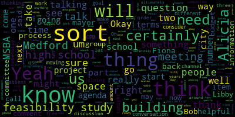
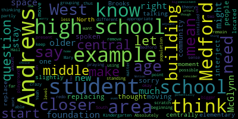

[SPEAKER_03]: Okay.
[Graham]: Okay, so I'm going to go ahead and read the meeting notice so we can get started and. Hopefully it will not take us the entire time. So we will see what we see. Okay, so please be advised that on Wednesday, May 29th at 6 p.m. there'll be a strategic and capital planning meeting, sorry, finance subcommittee meeting of the Medford High School Comprehensive School Building Committee held through remote participation via Zoom. The meeting is being recorded. The meeting can be viewed live on Medford Public Schools' YouTube channel, through Medford Community Media on your local cable, which is Comcast channel 9, 8, or 22, and Verizon channel 44, 45, or 47. Since the meeting will be held remotely, participants can call or log in by using the following meeting number. It's 963-3633-4995. Questions or comments can be submitted during the meeting by emailing jennigraham at medford.k12.ma.us. Those submitting must include the following information, your first name and last name, your Medford Street address, and your question or comment. So I will call the roll. Let's see, where did it go? Here we go. Member Graham here, Mayor Lungo-Koehn, do not see her yet. Libby Brown? Here.
[SPEAKER_03]: And Aaron Olapade. Here. Larry Brown. I don't see Larry yet. Bob Dickinson. Hi, Bob. And Fiona Maxwell.
[Graham]: Oh, you're on mute, but I think you said yeah. Okay, so for attendance purposes, we have three present, one absent. So the meeting can be called to order. We also thank you, Alicia, for joining us. I invited Alicia, who's our head of everything, it seems. Development and sustainability and something else, right, Alicia?
[Hunt]: Planning, development and sustainability.
[Graham]: Thank you. I knew I was forgetting something. Because a lot of the things that we'll be talking about certainly have some crossover into Alicia's world. And so thank you for being here and for joining us. We have just two items on our agenda for tonight. And certainly if people have questions along the way, it's a small group and you can feel free to stop me. And I'm happy to field those questions as best I can. We have two agenda items. So one was, to start a discussion about potential sites for Medford High School that would inform our next steps in the process, which ultimately is getting towards a feasibility study. And then the other thing that we have on our agenda is to discuss the anticipated budget for the feasibility study. And if the mayor's not here, we may just table that. But when we talk about potential sites, there I think there have been some questions raised in the community certainly over over the period of years around how to think about a new Medford High School and where it might be and I think you know certainly where it is right now is one very viable option but I think there is like a sort of a broader sense of possibility potentially in terms of what we might be thinking about And we don't need to make any decisions tonight, but I wanted to start the conversation because if there is a broadening of what needs to be studied in the feasibility study, we'll need to know that in order to start to sort of weave that into our process and our application. So that's our first agenda item. And I am happy to take any comments that you all have. So, you know, Fiona and Bob, you may not have as much to say about that. That's totally fine. But just trying to start to think through, you know, as a group, where do we you know, where do we begin in terms of sort of what is possible? And so, Alicia, thank you for being here. That's certainly a very helpful person to have on the team. So I will stop talking and see if there's any questions, comments, thoughts, that kind of thing. I have a question.
[Brown]: Sure. I'm not sure what other sites have ever been discussed in this project. I've been kind of in the you know, daydreams for a long time. And clearly when they built the high school in the 70s, I would assume what was there was woodlands before, was part of the fell. So I can't imagine taking any other chunks of woods or any other sites in the city. So I don't know if there's already any places that have been thought of or city-owned land that could even be an option. It feels like there might not be a lot of other places.
[Graham]: Yeah, I think that is certainly possible. I have, I have certainly heard people talk about Placedead Park as a possibility. Yeah. And I guess if you're going to talk about Placedead you could talk about potentially any of those like sort of open green spaces which all are under city control. Not that I want to sort of be the committee that takes parks away, takes parks out of Medford. I'm not saying that, I promise. It will be a swamp. But that, you know, I know that that at least sounds like it has been a discussion over the course of years in the city. And certainly, you know, as people speculate about what this project could be, that comes up fairly often. And I think it comes up often because at some point in time, There was a discussion about if there was going to be a new high school, could it be somewhere else? And somehow that seems to have been the thing that sort of stuck in the. public purview.
[Brown]: Right. And criteria, I assume for thinking about this, obviously there are lots of parks, but I mean, centrally located access to, if not transportation, like major roads, so easy to get to. I mean, I'd have placed the benefit being it backs up to the train line, so it's not necessarily butting up to a bunch of houses. Yeah. Those are the criteria. It's definitely not centrally located in the city, but neither is the high school right now.
[Graham]: Yeah.
[Brown]: Not much better. Yeah.
[Graham]: I do hear, I hear a lot of people talk about how it is not central in the city and it is not particularly easy to get to. I can sort of speak to like our busing situation so currently we provide buses at for those students who are more than two miles outside of the school zone in the secondary level. So that includes middle school and high school. The way we do that at the high school is in part through MBTA buses. And then there is some yellow bus service to North Medford where there is no MBTA service. So certainly central location is something that's been discussed a whole bunch of times. you know, over the years. So that certainly is a factor when we think about the high school and the, you know, the sheer amount of traffic that has to get to and from every day.
[Hunt]: Leisha? There's a lot of stuff that I could say about these various things. And I was wondering if you wanted, is it more useful for me to sort of throw out a bunch of information? Because as you were talking, there have been speculation for a very long time. And in the planning office, we've thought about these things as we did things like comprehensive plan and what could change and why should it change. I mean, honestly, As planners, we lament the fact that Medford High School ever moved out of Medford Square, because that was such invigoration to the business district here. It really changed things. People talk about how the square used to be a long time ago, much more vibrant. Well, frankly, if you had 1,000 high school students here, it would really But don't get me wrong high school students come to the square and so to middle school students, perhaps not in the droves that they would have when the school was here. Like, in my mind, anything is literally possible with enough money. I don't have unlimited money. And I want to recognize that, like, that is attention, right? One could, in fact, buy that old location and like, knock it down and build like, it's, it's possible. It's just not possible for Medford at this time in this financial situation. I'm assuming, but I wanted to say that I like to state my assumptions explicitly in case I'm missing something that other day. I do when you mentioned the transportation issue, there are a couple of things that I should flag, no matter where in the city you put this transportation is going to be an issue for North Medford, because it's hilly it's windy MBTA he doesn't get buses up there I was literally talking to somebody from the state about that today. about why do our school buses fit but not MBTA buses and they thought it might have to do with the clearance and how low to the ground the buses go because that's why there's no MBTA. I mean it's not the only reason but there's actual like MBTA has said to us we cannot run our large ADA buses through Fulton Heights. It doesn't literally work. So when you say, well, it's not accessible, the problem is it's always not gonna be accessible somewhere. The MBTA system is not the best. And we do have a working group on transportation that is talking about the transportation issues. That's actually why I was talking to the state today. So we have some city Councilors, Peter and some, oh my gosh, Megan from the schools are meeting with us along with some transportation companies, staff from my office, our traffic director, Pam from the senior center, someone from West Medford Community Center. We're starting to try to talk about this and we're talking to other communities, how do they choose transportation, We're looking at grants around electric school buses and whether owning our own school buses would be cost effective and would also solve some of our transportation equity issues. So I'm not saying that we're definitely doing it, but we were gonna look into it to see if, is this something that's worth proposing to the schools and to the city as something that could make sense. And we were in fact talking to the state today about technical assistance and grants for micro transit, which is what they call it when you run your own little bus and stuff within the city. So it's all stuff we're looking into, and I wouldn't want to cite a new school just on transit simply because you can move transportation. You're really done. But once you pick a site for the building, that site is done. I did grab, I pulled out our open space and rec plan because one of the things that that does do is that there is a map that has, and I'm sure I could get it online and point people to it, but at the moment I had a copy sitting on my desk. Um, there is a map in there and the map I'm currently looking at is regional context, but it marks which green spaces are permanently protected, which are limited protection. And the reason I do it with quotes is because in my experience, even something that's permanently protected can be swapped for something else. Like here's a space that's not protected. We'll permanently protect that to lift this protection over here. So there can't be net loss, and it's not always easy, but it can be done. And I say that because two of the places that have kind of percolated, there's playstead, that is not permanently protected. That's got limited protection on it. Um, and but my concern is it is taking it this the school from what is somewhat centrally located. It's like in the middle and you're really shoving it into the far corner with the wealthiest families or all the wealthiest neighborhoods in the biggest houses they can walk and everybody else has a long haul to get there. So I don't really love it and it's near station, but it's commuter rail. It's completely useless to our students in any and every way. I mean, for school.
[SPEAKER_03]: Yeah.
[Hunt]: So that's kind of where I'm not loving it as a location. But if one had a need to say what are possible locations and then let's, like, check off the pros and cons, it's rational to put it on the list so one can say we did a comparison of possible sites. The other one that has been bounced around more recently is Tufts Park. That one does have the label permanently protected on it and I'd have to poke a little harder into this to see what that quote permanent protection is. I like that as an area a little better because it's If you're going to push it into one corner of the city, that's our lower income area. Those are the students for whom if the bus isn't running, it's more likely that mom and dad can't hop in a car and come pick them up. It is making it more accessible to the people who have fewer resources. So that's sort of a rational thing. And there are bus lines that go that way. And with the MBTA improved bus services, they want to run more buses down Main Street. I'm not loving it because Main Street's so narrow. That is a highly congested area. You'd make things worse. But there is a big green open space there. I don't know if you would have space for a school and parking. There is the Curtis Tufts School and I think it was at a school committee meeting where they were very recently talking about whether we should be reconsidering the future of that. My hope is that that building could be repurposed for recreation or community center that the city could desperately need. But you could certainly include the Curtis Tufts property. It's our only outdoor pool. I'd hate to lose that too. The car park doesn't make any sense for a whole lot. The transportation is the worst possible for everything. And it's in the middle of a $7 million renovation, so please don't do that to me. I'm not clear there are any other open spaces. There are commercial areas that we don't own. We did do some site survey kind of like assessments when we were looking for the police station when we cited police station where it is, we actually did do some due diligence about, are there other locations in the city where you could put a new police station? And in that case, we really came down to, even if we bought something, almost everything would not be as centrally located. Yeah, and we were trying to see if we could get it out of floodplain areas. Property in Medford right now is really, really expensive. For us to purchase something doesn't seem reasonable in this climate.
[Brown]: What about like Hormel? that area.
[Hunt]: I mean, I know that would involve moving Hormel, but that's... So, Hormel is, yeah, it's more complicated protected. Its level of protection at this point is, we do have conservation restriction through the state and a federal conservation restriction on the whole, is it on the whole property? Oh, you know what, we did not end up doing the federal conservation restriction. It was going to be part of the Clippership. It was going to be our donation to the Clippership Connector was to increase the federal restrictions. And it was, I think, approved on the city's end. But then the federal government didn't, the state didn't move forward with that piece of it. So you would have to deal with state conservation restrictions. When we built the schools, the McGlynn and the Andrews, there was actually some conservation restriction swap for the footprints of those. So those buildings are exempt from the conservation restriction. And then there's land over in Rivers Edge that has a conservation restriction. in lieu of those two buildings, the footprints of those buildings. So there would need to be a conservation restriction, but somewhere else. I'm wondering what the, it's not completely irrational. I don't know what the, I was just looking at the map to see size wise. It would be that, And then you would be dealing with all the buses.
[Brown]: 43 schools there.
[Hunt]: For three and the congestion of three schools worth of students all in one complex.
[Olapade]: Here's I'm sorry to interject here. Here's a question. Has there been some thought at all about the moving of one of the middle schools that's in that area and replacing it with the high school? Because I know that I've spoken to some people in the community, and this is a question on my own, where if you're to have the high school be more centrally located, as we're talking about, let's say, if you were to replace it with the Andrews, let's just say for the moment, you move the Andrews closer to the West Medford area, so you have both an elementary school in the Brooks, and then you have a middle school in the West Medford, slightly more North Medford area, for example, and then you have the, Kindergarten through high school, you know more central central to South Medford, okay So Would that be I mean, that's not crazy.
[Hunt]: I Think the reason I hadn't thought about it is because I'm still stuck in the new schools mindset. I That building is too, I mean, the reality is the reason we're looking at the whole electrification HVAC upgrade is because the building itself is too new to be saying, oh, we should replace it. It really is only 23 years old.
[Olapade]: Absolutely. I think, I mean, it's not a matter of, oh, we should just remove the building is it, is it at all possible to, again, just as because we're just you know praying on Hail Mary's here. Could you, could you redo the Andrews for example and make it high school age student and that age appropriate. for example, because I don't want to level the building or start from scratch. I think you're right. It's too new of a building to do what you would, in theory, do and start from the beginning. But could you use that as a foundation to say, we know how much space we've been using thus far for the Andrews. Could we work off of the standing foundation of the Andrews?
[Hunt]: That it holds 600 students. It's got a cafeteria that serves as their auditorium and a gym. could you, basically what you would do is add on to that building, right? Like you've seen high schools where they have the old wing and the new wing. I went to school in a building that was an old school and a new school put together with a building in between them back in my town. You would have the issue, we would need more of the land around it. So you would need to, deal with some of the conservation restrictions that are on there and replacing that somewhere else, I'm sure.
[Brown]: Yeah, in theory, the Glen would be almost better because it's just got more space that's not already green. Well, it has for now, but of course, then you're displacing two schools because elementary schools there too.
[Olapade]: Yeah, I think that's partly why I was thinking that McGlynn wouldn't make as much sense because to your point about the two schools, they have a bigger student population and they're having the new playground installed. The Andrews, less students, but it's an older, it's an older amount of students. The students are a different age grouping. That wouldn't be, that isn't and wouldn't be present if we were to remain, keep the high school, for example, where it is. So if we were to have the Andrews be closer to the West Bedford area, that would then mean you could have students be able to potentially stay closer to home, for example. That might not be a big thing we need to worry about right now, but I think the McGlynn might need to stay because of what it offers, even though the space itself is more consistent with what we would need to consider that choice.
[Hunt]: So, but what we would end up with would be the cost of doing a major addition and possibly renovation to the Andrews School. And you would have to rebuild some sort of, or renovate the existing- Yeah, you would still have the structural issues of the high school. Right, you still need to put a middle school up there.
[Graham]: Yeah, you would be talking about two building projects, not one at that point. Yeah, that makes sense. Okay.
[Hunt]: When we look at the high school, some of the questions that I've had, is it helpful? I can't do this without looking at a map and visualizing it. So I have it up on my screen. I don't know if anybody wants me to share it, but.
[Graham]: Sure. Can you share or do I need to let you share?
[Hunt]: You need to let me.
[Graham]: Okay. I'll try that.
[Hunt]: Yeah. I just, I need to be seeing it in order to, and then I think if I make my screen smaller like this, make that, zoom in on this. Cause I kind of look at this and I think there's, I've had an understanding that the high school is very large for our population. And one of the concerns is that we are not gonna get, like there's square footage, calculations that come out of MSBA. I'm not terribly familiar with them, but I look at this footprint and then I say, I assume we don't need to replace or that we're not going to get a footprint that's this big. I don't know that.
[Brown]: One of the stories are probably going to be a smaller footprint. It's my guess.
[Graham]: Yeah, I think there's a couple of variables there, Alicia. One is that the school committee has voted that they want to see Curtis Tufts come onto the site of the high school in some sort of co-location perspective. So that's one thing that, and obviously that's like 20 kids, so it's not like substantive in terms of the number of students, but the space needs are very specific. And the other thing that is part of this grant is our early childhood programming. So there is a possibility of changing the amount of early childhood programming happening on the property in a way that would expand it. So the other thing that I think is like sort of dicey is like once you throw in the vocational programming, The space conversation is completely different than the space conversation about a new high school, but MSBA, you're correct, will go through and they will size the building. They will size the enrollment, and then I believe the feasibility study will size the building based on that enrollment.
[Hunt]: And I assume at this point, everybody who's part of this conversation is familiar with the existing, what's here existing. I am extremely familiar with it from some of the work that I've been doing over the years. So, one of the things I've been wondering about is, could we do something where this is the pool in the gym, where we're able to keep the pool in the gym, and then maybe build back here on the field of dreams. You build a new front door or something, but this remains as part of the new building. That is something that I've wondered about. It's already built into a hill where it's three stories here. And back here, you are literally entering onto what is the third floor if you walk to the front of the building.
[Graham]: Yeah, I think that's definitely something that we'll consider because edgily is, I mean, you can even see it in the picture. You can see more rubber in the picture than grass.
[Hunt]: Wow.
[Graham]: So yeah, so we will, you know, have to contend with that as well. But I, you know, I think some of that all of that can be studied, you know, anything about like the current, the current space can certainly be will certainly be part of the feasibility study. It's really just a question of like, you know, where are those other possibilities? So in doing this, are there any, you know,
[Hunt]: If it's helpful for you all to know, this is a field that is part of the school. This little area has recently been up for sale, and I was just contacted today by a developer who has the option to buy, and he wants to build, I want to say, a subdivision of eight houses here. I was hoping that maybe there, I couldn't imagine though that the city could have moved fast enough to try and buy that property. But if anybody hears talk about it apparently used to be a horse farm. Yeah.
[Brown]: Yeah, I think that if we're staying on the same site, which I think is entirely feasible, there'll be a fair amount of using either one of those two open spaces, even if just temporarily, while construction happens. I mean, I think it would probably be better to build onto the existing parking lot that's down where you pull in, just so that when you arrive, you're arriving at a school at a front door. and maybe move parking to another location, or it moves once you take something else down. But there is enough swing space in here to build and then take down or renovate to make the site work. I'm sure of it. It's definitely more tricky than a new separate site, since we're obviously not going to move students somewhere else temporarily. But it's doable.
[Graham]: Yeah. Well, and COLO, moving things around during construction becomes really tricky with our vocational programs. So all of that will be part of the feasibility study as well. But just to say like, you know, it's not the same as like moving a classroom. It's an entirely different sort of undertaking. So that's something that we'll have to consider as well. So, yeah. So Alicia, are there any other spaces that come to your mind? I think this is a perfectly fine working list, by the way. Right.
[Hunt]: I was just sort of like, as we go across here, like we have there are these commercial industrial areas. The other thing that I don't see how the city could really could do it. But we own this parcel and this parcel in the middle of Medford Square, and this one, and there are active plans. We have literally signed a contract in the last few days with a consultant to help us put these out to bid, to put housing, ground floor commercial housing on these properties. with the assumption that we would also build a parking garage over here. And we have vision and ideas. This is a parking garage that we feel is highly underutilized, but it's privately owned. And I'd love to like capture this somehow and be able to use it. In a dream world, what if you put the high school here, right? Across these properties, and that would be really interesting. but I'm not sure that we can move this boat that quickly to pivot to something like that. And we would lose out on all the revenue that we're anticipating from developing this as housing. I mean, it's not huge revenue, it is revenue, but what if you did that and then you allowed the high school site to be redeveloped and half that site to become housing instead?
[Brown]: Right. Like I was wondering about those parking lots. That seems like a great spot. But it's also good for development. Anything that's not a parking lot.
[Hunt]: Right. Yeah. Yeah. The project has moved slower than I would have liked, but we signed a consultant today. And none of this, we don't really own any of this. It's all private. A lot of this is ripe for redevelopment. I will say some of this is so ripe for redevelopment that we have been having conversations with various developers who are talking about what could they do here, be allowed, how can we help them with it? I can't imagine that we actually would want to put the high school on Mystic Ave, but again, it would be more central It would really make it hard for anybody to walk to school because of that location. But in theory, you would improve your streets and your sidewalks and your crossings and your bike paths if you did that.
[Graham]: But that's State Road, right? It is a State Road.
[Hunt]: Well, it's a State Road. It's local. from about, I forget exactly, when I'm on it, you can tell where it drops. Oh, here. I think this is actually the line, because you can see the pavement change. I believe that that's, I do believe that that is this, from here north, this is city, and the part there, that's state, because Eversource paved it as part of the project for the city. Got it. This must be a really recent photo. So yeah, so this part is, and interestingly, a lot of the owners along here are actually longtime Medford residents. They're not investor developers at this point. So I don't see it as being impossible to negotiate a deal, but I'm not sure it's a great idea.
[Graham]: Yeah, okay.
[Hunt]: I just feel like it's better to be thorough and to say, we thought about it, we talked about it, and then it, and this area, this is all owned by, I'm going to call him an investor developer, the core power.
[Brown]: My yoga studio, okay.
[Hunt]: He says it's hugely popular. I met with them last week. So yeah.
[Graham]: Oh, yeah, they pack them in there. Alicia, thank you for all this. I think this was really helpful. I have to, I just got access to the MSBA's portal that requires us to submit a bunch of information that feeds enrollment projections. And so, Bob and Alicia, there's definitely some tentacles there that will require your input around, you know, growth, planned growth, and that kind of thing. So I will sort of funnel that off to you. I've just started looking at it though. I'm not sure, I don't think there's anywhere where we have to sort of describe this just yet, but perhaps it has to be described in the RFP when we are at the point of like going out either to the OPM or out to, the actual feasibility study. So hard to say like exactly when this information will be useful, but I think it's sort of on the minds of lots of people. So I'm glad that we had the conversation because now I can assure people that we are talking broadly about all the possibilities and really thinking through all of that. Um, I think that was, uh, that was very helpful. Thank you. Um, the other item on our agenda for tonight is to start to talk about, um, the anticipated budget for the feasibility study. So, um, and, you know, I can talk a little bit about next steps. So before, um, before we can get out of the eligibility phase, we have to, the city has to authorize a feasibility, the cost of a feasibility study and demonstrates MSBA that we have the money, whatever that mechanism is, and, you know, an amount. So that, I know I have been talking to the mayor about that and, you know, I believe her plan is to use free cash. At least that's where she was at the last time I spoke with her. And so we won't need to take a vote to do a bond or a debt exclusion, but the council will have to take some sort of vote. that authorizes its use and it needs to be in a pile that is demonstrable for the MSBA in order for them to sort of flag us into the next phase. So procedurally, that's what needs to happen. As I've been talking to people about sort of what the budget needs to be, I've heard you know, a variety of numbers between two and a quarter and $3 million for the feasibility study. Roughly half of that, a little bit more than half, it sounds like, would come back to us eventually in this process. If we get all the way through with MSBA, they do credit you back the same thing as your reimbursement rate. And when we had our kickoff call with them, I think they said our reimbursement rate was like 52.5%. seven or 52.69 as of that day. So it changes, apparently it can change all the time, but 52% of that would come back. eventually, but not, but the city has to put the money up front to do the feasibility study. The other thing that was raised to my attention was that, and actually we took a tour of Arlington High School and they're in the middle of their project. So part of the building is open, part of it is not. And they said something sort of related, which was, we're still learning how to use this building. and there's all kinds of things that happen in the building where they're like oh there's something wrong with the building and it just turns out like they don't know how to use the building like the entire infrastructure of the building is different than what they're used to and so they're very much in this like learning process. So our CFO at the schools said that it's not uncommon for districts to In addition to bringing on the OPM and ultimately the designer to bring somebody on on the district side to ride sort of side saddle with the project and really intimately understand all of the various components of the build and how it works and how it's envisioned to work and how the plan changed to the actual and all of that from a facilities maintenance perspective. And that that's a job that's sort of bigger than like the director of facilities just being able to do that in addition to all the other things that he does already. And that Jerry was saying that the other thing we might consider is, and I need to connect back with him on this, but the other thing we might consider is making sure that that set aside funded this like this position that sort of helps us like sort of smooth that out and bridge the gap over time. So that's sort of another thing that we need to think about in terms of funding. So I, you know, by all the accounts that I've heard somewhere between two and a half and three is probably the right amount of money based on all the things that have to happen. But Bob and Fiona, I wasn't sure whether you had resources that you could tap into in terms of other procurements. and the budgets being set for communities like ours for this for these processes that might help inform that that ultimate number that needs to be set aside and I don't know what sort of digging and investigating you all have done in your free time on this up till now and I don't know you know sort of how you are connected to other communities but I wanted to give you some space to talk to us about what those, where you might have information that could plug into that, or even Alicia, if you have those connections, like how can we sort of leverage the city side and talk about all of that as well, sort of actively?
[Dickinson]: Well, I really, I don't have any experience in building a school or doing any of this. So I really don't know. Nantucket built a new intermediate school six, seven years ago. So I could call up my buddy Martin and see if he knows anything about it. But again, it's that you know, that process, we had, you know, Nantucket had the land, they knew where they were building it, and the entire budget for it was one tenth of what we're talking about. So yeah, there's a big difference between middle school and high school. Also, then you have building on Nantucket, which is entirely different than building here. Yeah, yeah. You know, the Nantucket thing is that I think probably a good 10% of the cost of building the new school was simply staging costs for the contractor to get equipment and people over here and rent housing for the people to build it, which would be slightly different than it is in Medford, where hopefully there's somebody around here with a crane. Do you know what I mean? With a few cranes. Yeah. I could talk to Martin about it.
[Graham]: Yeah, I mean, I think that Nantucket is a very different place for all those reasons you cite. I don't know, Fiona, if you are connected to other purchasing folks that might have some light to shed. And Libby, I know you sort of work in this space, if you have any light to shed. So it's really just more to sort of get the juices flowing and thinking about before we go too far.
[Maxwell]: I do have a group, maybe some surrounding communities. I think you mentioned Arlington more recently. Yep. I know Somerville is also another community that has done a new high school. Yep. I think of Stoneham in the last few years, which is a little different. It's a town a lot smaller. And I have a pretty good relationship with the procurement officer in Stoneham as well as Somerville. So I can certainly reach out to some of the group and see how things worked with them. I'm going to just say this is similar to Bob. I don't have a lot of experience building a new school other than the community that I lived in, but that was on the different side of it. So, um, so this is, um, yeah, something I can definitely, I haven't, I haven't done that yet, but I can certainly.
[Graham]: If you could, that would be great. I think the other thing that would be helpful Fiona to start the wheels turning in, um, in a related way is to. to find out if they have copies of their procurements for their owner's project manager. That's going to be our net, you know, that's going to be our like big thing is to like get ready to issue that RFP because once the OPM gets on board, life for all the rest of us gets easier, hopefully. So I'm looking forward to that. Yeah. Yeah. So.
[Maxwell]: And the city does have templates for RFQs for OPM for designers. Um, you know, we've done it for the library. We've done it for the police station. We've done it for the fire station. And we're doing it for the McGlynn and Andrews right now. We just hired an OPM. So, I mean, we definitely have, you know, some templates and some foundations.
[Graham]: Yeah. And Fiona, I'm thinking that there's also, um, some very school-specific things about building with MSBA that maybe your counterparts in those other communities could provide as well, because the MSBA's process is very prescriptive, sort of at every step. So anything that they can tell us, because my goal, you know, my goal, whenever we're done with eligibility and they invite us to the next phase, which is hiring our OPM, is like, my goal is that the next day our RP goes out the door and we are moving right along. And so obviously we'll sort of convene a working group with you between now and then to sort of get that procurement ready to go and make sure that it has all of its moving parts. But if you're talking to them anyway, maybe grabbing that stuff too from them would be really helpful.
[Maxwell]: Okay, thank you.
[Hunt]: If I might, I was on the committee for all of those OPM hires and a couple of things that I have noted is that that is the right time and place to sort of set a tone for the city's goals and what's important to the city. When we hired different OPMs for the library versus the police versus the schools, we had different core issues and goals in mind. And I set aside the fact that I'm a sustainability director. I was a sustainability director and all that. So we were like, oh, we want low green net energy schools. But what are you thinking about with the library? The library director knew what her strengths and weaknesses were and looked for an OPM that could fill in like be a good partner for her where she had these strengths and these weaknesses, they would have the other as opposed to be like together. It was actually interesting when we were coming to the final decision around that. When we were interviewing for the OPM for the HVAC work, it was interesting that I kind of wondered if some of them were aware that there was a new school on our horizon. There was one firm that bid or that put in a proposal that clearly that they did was big new schools with real big, with MSBA experience heavy. And I kind of, I didn't ask them. I wondered though, were they, did they feel like they were, you know, being a preview for what, for us to get used to them. It's this idea that maybe did a good job there, we would want to hire them for the high school.
[Brown]: But what- Yes, they were doing that. Right.
[Hunt]: Yeah, what I did notice is that some of them really spoke to their experience and abilities with MSBA, which is why I wondered because that project is not MSBA funded.
[Graham]: Right, right.
[Hunt]: but some of them really seem to have a good understanding of that. And I did work on when the city did the boilers at the high school, that project, not high school, not the boilers, we did a boiler project too, but it was the science labs that MSBA funded. And it was really important actually to have somebody who understood those details. Yeah. Simply because things would come up and we'd be like, can we do this? And they'd be like, while that might actually make sense if you were paying out of pocket, it doesn't because of these MSBA reasons or MSBA won't pay for that. And so that did shape some of what we did. And I, it seems like it would go without saying, but you want a project manager who is going to lead and drive the project to the sense that they're going to say, we need to meet, who's available to meet, this is the time, let's set this up, let's set up our meetings, you know, and then rally and be an advocate for the city, because I have watched OPMs just sit back and say, oh, the city should this is the city's project. We're just here to help. And then you're like, you didn't tell us and you didn't warn us and we didn't know. And I've seen other OPMs who were like, here's what you need to know. And we need to push back on this contractor. And we need to argue with the architect over what's possible. Yeah. And so you need to be or at least call it out like yeah no you can do another iteration or this or have you looked at it this way versus that way and be another set of eyes on it and that's helpful to look at. I did think when we did the library and the police station that literally the fact that the staff person in the room besides the chief of police of the library was the sustainability director set a tone for them. I'm not saying I want to be in on those interviews. But it was set up front, like, this is green is important to us, we value this. And I think that it's important that the school department put forward like, this is important, like, this is gonna be a net zero school, right? Like, what would it?
[Graham]: Yeah, and the school committee has already outlined that set of goals and objectives. we're sort of on our way with that for sure. But yes, like making sure that sort of what we envision is well outlined is definitely sort of top of mind.
[Hunt]: Yeah. That you don't need your OPM telling you that that's a bad idea. Yeah.
[Brown]: I've had them say it. I know. No, I've worked for OPMs a lot. I obviously have a client, but the OPM kind of is between us and in a good way, you know, helping things along and you need to make sure that their vision aligns with our vision, City of Medford vision, because oftentimes they're very experienced and they have been doing this for a long time and they kind of know how to do things or how they've done things, which makes sure they know how we want to do things in the future. Yeah, that'll be very important.
[Hunt]: I don't know how you set your budget for a feasibility study, but I think going to the other cities, I mean, I get this question all the time. Alicia, you did this plan or this kind of project. Can you tell me about it? What did these things cost? can you give me the RFQs you used? Can you tell me what the bids were? There's a lot of stuff that Fiona will know what is legally public record. So it's fine for us to ask other communities for this information.
[Brown]: Yeah, that's what I want to know. Is it okay to ask? Do you share? You do share that as long as it's the right documents, right?
[Maxwell]: Yes.
[Brown]: So we can ask.
[Maxwell]: Yes, often. Okay, cool.
[Graham]: Yeah, and Alicia, the numbers I've been hearing are pretty consistent from multiple sources in terms of people familiar with Medford and this project. The numbers are not all over the map, so I think that's a good thing for us. And I think the mayor is hearing the same, so that is awesome.
[Brown]: And this is mostly the fees to cover OPM, architects. Feasibility, yep. And mostly just like consultant fees, mostly, right?
[Graham]: Yep. Yeah. Um. And, you know, ultimately, we will the city council have to take a vote with some very precise language, but I don't think that's anything for this group to be worried about. I will like work with MSBA to make sure the language that goes forward is compliant and sort of ready to go. But, um. Yeah, I think those were our two agenda items. So thank you all for joining, 655. We're done early, so hopefully you can take your hour back. And then Bob and Alicia, I will reach out to you separately about some of the things that we need from a planning and projection perspective. It may be more Alicia than Bob. I'm not sure. I've just literally got the access like two hours ago. So we'll keep you posted.
[Hunt]: And Jenny, I know I told you this, but I'll just share. So the MAPCs are regional planning agency and they do population projections as part of what they do and for various purposes and ways. So I've actually already spoken to them and they just asked that we provide them with the exact language, because sometimes the different words are nuanced and mean things, but they can help us develop some projections that they can put data behind. And it's not using up staff time that's so limited, but they have the bandwidth for that.
[Graham]: Great. OK. So if there are no other questions, is there a motion to adjourn?
[Olapade]: Motion to adjourn.
[Graham]: Motion adjourned by Aaron, seconded by Libby. That's okay. And roll call. Jenny Graham, yes. Mayor Lungo-Koehn, absent. Libby Brown. Yes. And Aaron Olapade.
[Olapade]: Yes.
[Graham]: Three in the affirmative, one absent. The meeting is adjourned.
[Maxwell]: Thank you. Thank you everyone.
[Graham]: Thanks Alicia.
|
total time: 19.23 minutes total words: 3004  |
total time: 2.32 minutes total words: 446  |
||
{kind=link}
{kind=link}